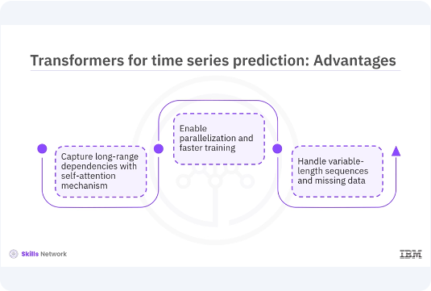
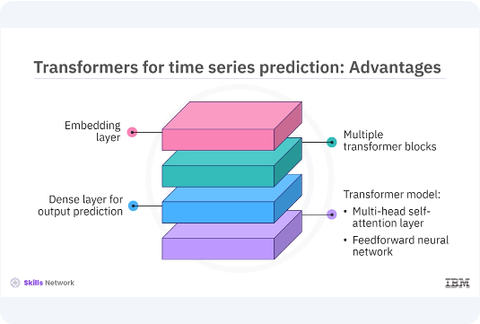
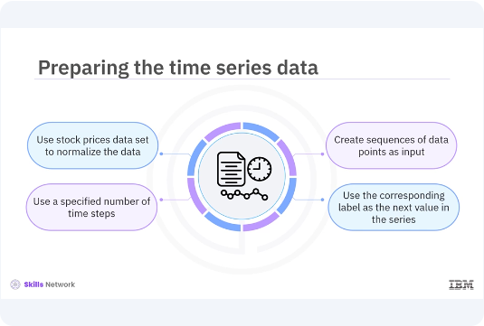
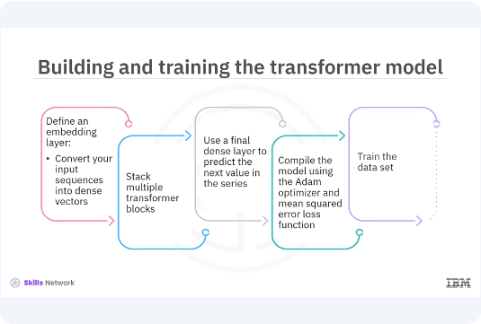

Transformers for Time Series Predictions

Welcome to this video on developing transformers for time series prediction. After watching this video, you'll be able to, explain the concept of using transformers for time series prediction. Explain how transformers can capture long-term dependencies and sequential data. Describe how to build and train a transformer model for time series prediction using Keras. Time series data is a sequence of data points collected or recorded at successive points in time. Traditional methods like auto regressive integrated moving average, ARIMA, and more recent methods like recurrent neural network, RNN, and long short term memory, LSTM, have been widely used for time series prediction. However, transformers have shown great promise in capturing long term dependencies in sequential data, making them highly effective for time series forecasting.
Let's dive into how transformers can be applied to this domain. Transformers offer several advantages over traditional models for time series prediction. Their self attention mechanism allows them to capture long range dependencies more effectively. Unlike RNNs and LSTMs, transformers process the entire sequence at once, enabling parallelization and faster training. Moreover, transformers can handle variable length sequences and missing data more gracefully. These attributes make transformers a powerful tool for time series forecasting.

Let's build a transformer model for time series prediction. You will use Keras to define your model. The key components of your model will include an embedding layer, multiple transformer blocks, and a final dense layer for output prediction. You will start by defining the transformer block, which consists of a multi head self attention layer and a feed forward neural network.
pyenv activate venv3.10.4
import tensorflow as tf
from tensorflow.keras.layers import Layer, Dense, LayerNormalization, Dropout
class TransformerBlock(Layer):
def __init__(self, embed_dim, num_heads, ff_dim, rate=0.1):
super(TransformerBlock, self).__init__()
self.att = tf.keras.layers.MultiHeadAttention(
num_heads=num_heads,
key_dim=embed_dim
)
self.ffn = tf.keras.Sequential([
Dense(ff_dim, activation="relu"),
Dense(embed_dim),
])
self.layernorm1 = LayerNormalization(epsilon=1e-6)
self.layernorm2 = LayerNormalization(epsilon=1e-6)
self.dropout1 = Dropout(rate)
self.dropout2 = Dropout(rate)
def call(self, inputs, training, mask=None):
attn_output = self.att(inputs, inputs, inputs, attention_mask=mask)
attn_output = self.dropout1(attn_output, training=training)
out1 = self.layernorm1(inputs + attn_output)
ffn_output = self.ffn(out1)
ffn_output = self.dropout2(ffn_output, training=training)
return self.layernorm2(out1 + ffn_output)
In this example, the transformer block class defines the transformer block with multi head self attention and feed forward layers. The code method applies self attention and feed forward layers with residual connections and layer normalization.

Before training your transformer model, you need to prepare your time series data. You will use a stock prices dataset and normalize the data. Then you will create sequences of data points to be used as input for your model. Each sequence will contain a specified number of time steps, and the corresponding label will be the next value in the series.
import numpy as np
import pandas as pd
from sklearn.preprocessing import MinMaxScaler
# Create a synthetic stock price dataset
np.random.seed(42)
data_length = 2000 # Adjust data length as needed
trend = np.linspace(100, 200, data_length)
noise = np.random.normal(0, 2, data_length)
synthetic_data = trend + noise
# Create a DataFrame and save as 'stock_prices.csv'
data = pd.DataFrame(synthetic_data, columns=['Close'])
data.to_csv('stock_prices.csv', index=False)
print("Synthetic stock_prices.csv created and loaded.")
# Load the data set
data = pd.read_csv('stock_prices.csv')
data = data[['Close']].values
# Normalize the data
scaler = MinMaxScaler(feature_range=(0, 1))
data = scaler.fit_transform(data)
# Prepare the data for training
def create_dataset(data, time_step=1):
X, Y = [], []
for i in range(len(data) - time_step - 1):
a = data[i:(i + time_step), 0] # slice a sequence from data
X.append(a) # append the sequence to X
Y.append(data[i + time_step, 0]) # append the next value to Y
return np.array(X), np.array(Y)
time_step = 60
X, Y = create_dataset(data, time_step)
# Print to debug and understand the shapes
print("Length of data:", len(data))
print("Length of X:", len(X))
print("Shape of first element in X:", X[0].shape if len(X) > 0 else "X is empty")
print("Shape of Y:", Y.shape)
# Reshape X to fit LSTM input shape requirements (if X is not empty)
if len(X) > 0:
X = X.reshape(X.shape[0], X.shape[1], 1)
print("Shape of X after reshape:", X.shape)
print("Shape of X:", X.shape)
print("Shape of Y:", Y.shape)
In this data preparation example, you need to load the dataset and select the closed prices. Then normalize the data using min max scaler. Create sequences of data points and corresponding labels for training. Print the output to debug the missing values and understand the shapes. Now that you have prepared your data, let's build and train your transformer model.

You will define an embedded layer to convert your input sequences into dense vectors. Then you will stack multiple transformer blocks followed by a final dense layer to predict the next value in the series. You will compile the model using the atom optimizer and mean squared error loss function and train it on your prepared dataset.
from tensorflow.keras.models import Model
from tensorflow.keras.layers import Input, Dense, Flatten, Embedding
# Define the Transformer model
input_shape = (X.shape[1], X.shape[2])
inputs = Input(shape=input_shape)
# Embedding layer
x = Dense(128)(inputs)
# Transformer blocks
for _ in range(4):
x = TransformerBlock(embed_dim=128, num_heads=4, ff_dim=512)(x)
# Output layer
x = Flatten()(x)
outputs = Dense(1)(x)
# Create the model
model = Model(inputs, outputs)
# Compile the model
model.compile(optimizer='adam', loss='mse')
# Train the model
model.fit(X, Y, epochs=20, batch_size=32)
In this code example, you need to define the input shape and embedding layer to convert input sequences into dense vectors. Then stack multiple transformer blocks. Add a final dense layer to predict the next value in the series. Compile the model using the atom optimizer and mean squared arrow loss function. Train the model on the prepared dataset.
from keras.models import Sequential
from keras.layers import LSTM, Dense
from matplotlib import pyplot as plt
# Define the model
model = Sequential()
model.add(LSTM(50, return_sequences=True, input_shape=(time_step, 1)))
model.add(LSTM(50, return_sequences=False))
model.add(Dense(1))
# Compile the model
model.compile(optimizer='adam', loss='mean_squared_error')
# Train the model
model.fit(X, Y, epochs=10, batch_size=32)
# Make predictions
predictions = model.predict(X)
# Inverse transform the predictions to get the original scale
predictions = scaler.inverse_transform(predictions)
# Plot the predictions
plt.plot(scaler.inverse_transform(data), label='True Data')
plt.plot(np.arange(time_step, time_step + len(predictions)), predictions,
label='Predictions')
plt.xlabel('Time')
plt.ylabel('Stock Prices')
plt.legend()
plt.show()
After training your transformer model, you need to evaluate its performance and make predictions. You will use the trained model to predict future values in the time series and visualize the results. Use the trained model to make predictions on the input sequences. Inverse transform the predicted values to the original scale. Plot the true data and predictions to visualize the model's performance.
In this video, you learned time series data is a sequence of data points collected or recorded at successive points in time. By leveraging the self attention mechanism, transformers can effectively capture long term dependencies in time series data, making them a powerful tool for forecasting. The key components of the transformer model include an embedding layer, multiple transformer blocks, and a final dense layer for output prediction.